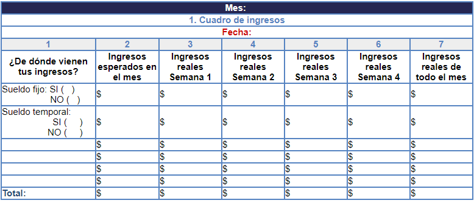
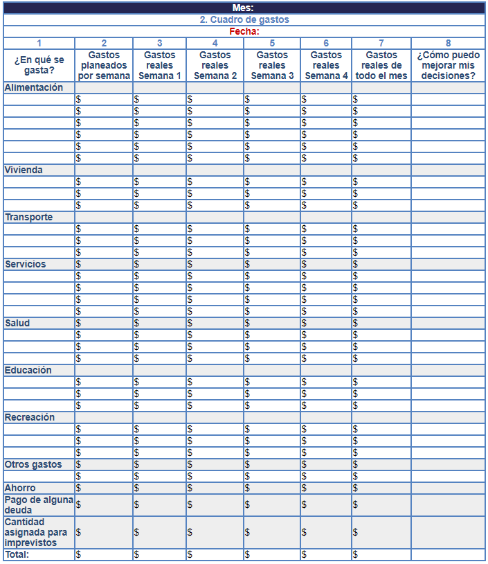
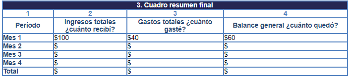
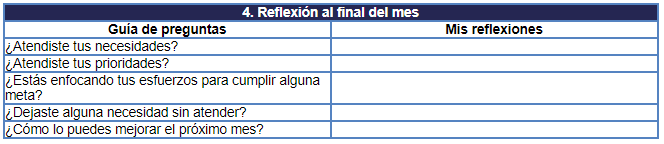

Ejercicio 3: Mi presupuesto
Objetivo: Realizar tu propio presupuesto.
Indicaciones
Elabora unas tablas iguales a las que ves en estos ejemplos, llénalas con tus ingresos y gastos fijos y variables, según corresponda, para que obtengas la cantidad de ingresos y gastos totales que recibes y realizas al mes. Te recomendamos hacer este ejercicio cada semana, para que al final del mes compares el total de lo que recibes contra el total de lo que gastas durante el mes.
1. En este primer cuadro llena los ingresos de un mes, los vas a ir desglosando por semana.
2. En este segundo cuadro vas a llenar los gastos que tuviste durante todo el mes, desglosando semana por semana.
En caso de que algún otro miembro de tu familia aporte dinero para la manutención de la casa, sería importante que al llegar a casa, hagas el ejercicio con tu familia. Realizar un presupuesto también puede ser un proyecto familiar al que todos nos podemos unir.
3. En este tercer cuadro vas a comparar lo que recibiste contra lo que gastaste. En la columna 4, deberás restar la columna 2 de la 3 para que te dé el resultado.
Ejemplo:
4. En esta cuarta tabla analiza si los gastos que realizaste y los ingresos te ayudan a contestar estas reflexiones.
 Tablas adaptadas de "Organizo mi bolsillo y las finanzas familiares" de Instituto Nacional para la Educación de los Adultos, INEA, Libro del Adulto. México: Primera Edición 2006.